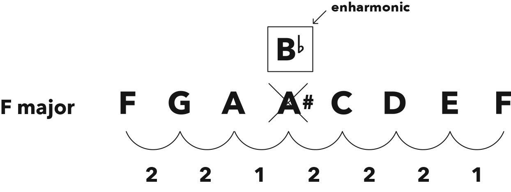
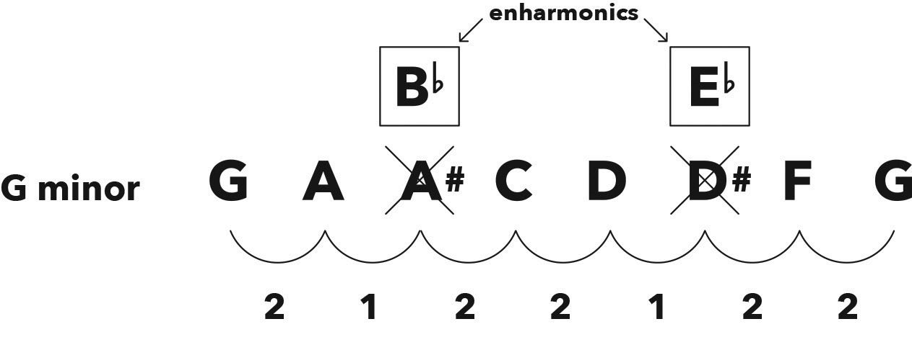

Why Flats Exist 为什么会出现降号
Hack
Every major and minor scale must contain the first seven letters of the alphabet, otherwise things get confusing.
每个大调和小调都必须包含字母表的前七个字母，否则会变得很混乱。
If you’re working out a scale and you get to an A, and your formula says the next note is one semitone up (A♯), it must be referred to by its enharmonic (B♭), otherwise the scale will have two As and no B.
如果你在构建一个音阶，到了 A，而你的公式说下一个音是半音上升（A♯），此时必须用等音（B♭）来表示，否则音阶中会有两个 A 而没有 B。
This is the sole reason for the existence of flats.
这就是降号存在的唯一原因。

Figure 7.1 In F major, one semitone up from A must be referred to as B♭
图 7.1 在 F 大调中，从 A 向上一个半音应称作 B♭

Figure 7.2 In G minor, we rename A♯ to B♭ and D♯ to E♭, in order for the scale to contain all seven letters
图 7.2 在 G 小调中，我们将 A♯ 重命名为 B♭，将 D♯ 重命名为 E♭，以便音阶包含所有七个音符。
Remember, key signatures consist of either sharps or flats, not both.
请记住，调号要么由升号组成，要么由降号组成，不会两者都有。
Chaper
A♯ and B♭ are two different names for the same note, so why don’t we just call the note A♯ all the time?
A♯ 和 B♭ 是同一个音符的不同名称，那为什么我们不一直叫这个音符 A♯ 呢？
This is a great question, and provides me with the perfect opportunity to bust out another metaphor.
这是一个很好的问题，也给了我一个使用另一个比喻的绝佳机会。
When I was teaching at the college in London, we hired a new lecturer named Will, and all was well in the music department.
当我在伦敦的学院教书时，我们聘请了一位名叫威尔的新讲师，一切都很好。
Then we went on to hire another new lecturer, also named Will, and order descended into chaos within our music team.
然后我们又聘请了一位新讲师，也叫威尔，音乐团队随即陷入混乱。
Will the Second decided to do the right thing and kindly volunteered himself for a name change to Bill.
第二位威尔决定做正确的事情，友好地自愿改名为比尔。
This was the only way we could avoid confusion, and it’s exactly the same in music.
这是我们避免混淆的唯一方法。在音乐中也是如此。
For example, when we work out the F major scale, we notice that the 3rd note is A and the 4th note is one semitone up from that (A♯).
例如，当我们计算 F 大调音阶时，我们注意到第 3 个音符是 A，第 4 个音符是半音上升的 A♯。
We now have two As in our team, which is thoroughly ambiguous, so we need to give the second A another name.
现在我们的音阶中有两个 A，导致非常模糊，所以我们需要给第二个 A 起另一个名字。
Once again, enharmonics save the day. By using the other name for A♯ (i.e. B♭), everything is crystal clear when we’re writing, reading, discussing, and playing music in F major.
再次使用等音记号，通过使用 A♯ 的另一个名字（即 B♭），当我们在 F 大调中写、读、讨论和演奏音乐时，一切都清楚了。
This is the sole reason for the existence of flats, and understanding this concept allows us to fully appreciate that having two names for each note doesn’t make things more complicated: it actually prevents confusion and makes everything much simpler.
这就是降号存在的唯一原因。理解这个概念让我们能够充分理解，给每个音符两个名字不会使事情变得更复杂，相反，它实际上防止了混乱，使一切变得更加简单。
I really dig how this also ensures that each note is treated equally, and while they’re all connected and working together as a team, they’re still individuals with individual names.
我非常欣赏这种处理方式不仅确保了每个音符都被平等对待，虽然它们都是相互连接并一起合作的团队成员，但它们仍是有自己名字的个体。
How beautifully reflective of life and of a society living in harmony.
这美丽地反映了生活和一个和谐的社会。
This is why, depending on the context, it can be incorrect to refer to a note by its other name (as we mentioned in chapter 2), like in F major where there’s no A♯, only B♭.
这就是为什么根据上下文，用另一个名字称呼一个音符可能是错误的（如我们在第二章提到的），例如在 F 大调中没有 A♯，只有 B♭。
Let’s do another one for practice, and let’s try a minor this time.
让我们再练习一次，这次我们试试一个小调音阶。
How about G minor? Take a few minutes to figure it out yourself, and, when you’re done, have a look at my version and see if you got all the names correct for your new crew.
我们试试 G 小调怎么样？花几分钟时间自己尝试一下，完成后看看我的版本，看看你是否正确地命名了所有音符。
In G minor, we end up with two friends who need renaming.
在 G 小调中，我们最终得到两个需要重新命名的音符。
First, the A♯ is renamed B♭; second, the D♯ is renamed E♭.
首先，A♯ 被重命名为 B♭；其次，D♯ 被重命名为 E♭。
The key signature of G minor is therefore B♭ and E♭.
因此，G 小调的调号是 B♭ 和 E♭。
It’s worth noting that in both major and natural minor scales, you’ll only ever have sharps or flats, never both.
值得注意的是，在大调和自然小调音阶中，你只会遇到升号或降号，而不会同时都有。
In other words, your key signatures consist of either sharps or flats.
换句话说，你的调号要么是升号，要么是降号。
This will help keep you on the right path: if you’re working out a major or natural minor scale and end up with both sharps and flats, then something must’ve gone wrong somewhere.
这有助于保持正确的方向：如果你在计算大调或自然小调音阶时，出现了升号和降号，那肯定是某个地方出错了。
Double-check the formula and count those intervals again.
请再次检查公式并重新计算这些音程。
Now that everyone’s here and happy with their names and individuality, we can continue respectfully, sans confusion.
现在大家都在对自己的名字和个体感到满意，我们就可以继续以尊重的态度进行，不会产生混淆。